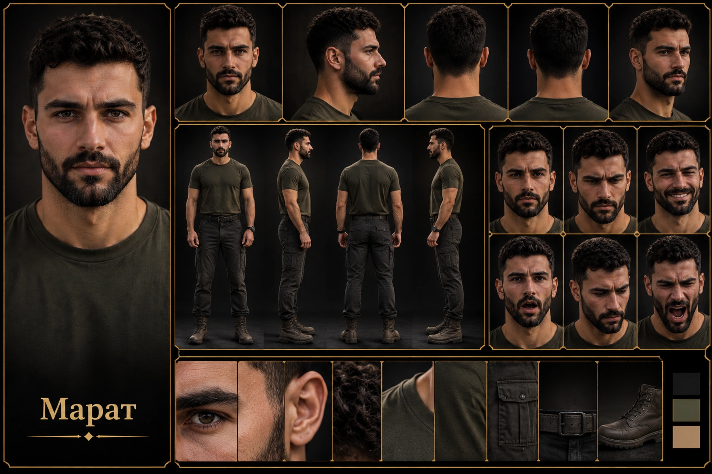

ОСНОВНА ІНФОРМАЦІЯ
Від кав’ярні до спільноти характерників
До ініціації Марат був звичайним українцем із Києва та власником невеликої кав’ярні неподалік Києво-Печерської лаври. Він добре знався на каві, уважно ставився до гостей і любив свою справу. Його родина має кавказьке коріння, але сам Марат вважає себе українцем. Дід Микола пояснює йому, що здатність бути характерником не залежить від генетичного походження.
Після знайомства з Дмитром, дідом Миколою та Найріном Марат погоджується пройти навчання на плані Найріна. Він швидко опановує мисленнєве спілкування й невдовзі ініціює свого племінника. Через нього до спільноти долучаються друзі та знайомі родини; на ранок біля кав’ярні збирається велика група нових характерників і людей, пов’язаних мислезв’язком.
Походження: Україна, Київ
Родинне коріння: Кавказ
Попередня справа: власник кав’ярні, бариста
Статус: характерник Першого плану
Ранг: хорунжий отаман Першого плану
Зброя: дві бойові шаблі
Навички: мисленнєве спілкування, портали, шабельний бій
НАВЧАННЯ ТА ІНІЦІАЦІЯ
Швидке опанування нового
Після перших настанов Марат вирушає на тренування. Уже за короткий час він упевнено користується мислезв’язком і допомагає поширити ініціацію серед близьких. Його племінник, двоє друзів і подруга першими відгукуються на новий зв’язок; згодом хвиля долучення охоплює їхні родини та знайомих.
Після дев’яти днів підготовки Марат проходить випробування заради власних шабель. У поєдинку проти Дмитра й Найріна демонструє швидку реакцію, гнучкість, витримку та здатність перебудовувати тактику. Він виборює зброю й продовжує бій уже шаблями.
ХОРУНЖИЙ ОТАМАН
Майстерність і відповідальність
Після випробування гетьман Миколай пропонує Маратові не лише шаблі, а й ранг хорунжого отамана Першого плану. Спершу Марат сумнівається, чи готовий узяти на себе таку відповідальність, але зрештою приймає призначення. Дмитро й Найрін вітають його вже як рівного.
У подальших подіях Марат бере участь у спільних нарадах керівників характерників і працює над військовим напрямом. Його історія поєднує уважність до людей, любов до своєї справи та рішучість, яка проявляється в бою.
ОСОБИСТІСТЬ
Спокійний у щоденному житті, рішучий у випробуваннях
Марат уважний до деталей і людей. Його захоплення кавою свідчить про терпіння, спостережливість і прагнення досконало знати свою справу. У критичний момент він діє швидко, наполегливо й не відступає від мети, але здатен приймати відповідальність не лише за себе.